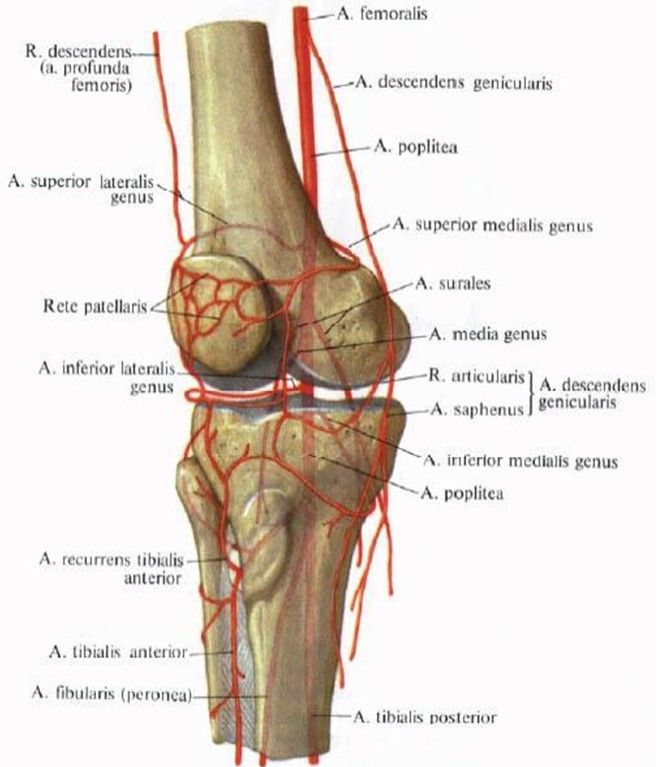

Articulațiile reprezintă punctul vulnerabil la multe persoane cu vârsta peste 50 de ani. Conform statisticilor Institutului European de Sănătate, într-o măsură mai mare sau mai mică, ele sunt afectate la 95% dintre persoanele care au trecut de 50 de ani. Acest lucru se datorează uzurii naturale a cartilajului.
Toate produsele disponibile în farmacii sunt destinate numai ameliorării temporare a simptomelor, dar nu restabilesc complet articulațiile. Savanții elvețieni au propus o metodă unică de regenerare a țesuturilor cartilaginoase. Datorită acesteia, nu numai că trece durerea, ci și are loc vindecarea completă a articulației.
Deoarece 98% din toate bolile articulare sunt legate de îmbătrânirea și uzura cartilajului, această metodă poate vindeca o gamă largă de patologii:
- Artroza
- Artrită
- Osteocondroză
- Bursită
- Guta
- Osteoporoza
- Periartrită
- Sinovită
- Sindromul Felty
- Boala Still
- Boala Behterov
- Higroma
- Reumatismul
- Boala Reiter
La o întâlnire cu reporterii, descoperirea savanților elvețieni a fost comentată de celebrul reumatolog, medic de categorie superioară, profesorul Ion Mânăscurtă

Reporterul: Care-i problema cu metodele existente de tratament? Astăzi în farmacii există o mulțime de remedii.
Ion Mânăscurtă: Da, într-adevăr, există multe preparate pentru articulații - farmaciile sunt pline cu ele. Cu toate acestea, este doar o părere că există o mulțime de remedii capabile să restabilească articulațiile. De fapt, toate medicamentele acționează la fel. Cei care s-au ciocnit deja cu patologiile articulațiilor știu că este aproape imposibil de restabilit complet sănătatea articulațiilor.
98% din toate bolile articulare se datorează modificărilor proprietăților cartilajului. Sub influența diverșilor factori adverși, țesutul cartilaginos se usucă. Proprietățile sale de amortizare se reduc, cartilajul începe să se fisureze. Dacă stratul cartilaginos se subțiază din cauza uzurii naturale, obținem artroză. Dacă în fisurile cartilajului pătrunde infecție și articulația se inflamează, obținem artrită. Dacă celulele articulației încep să se divizeze anormal, obținem artrită reumatoidă. Prin aceasta, vreau să arăt încă o dată că toate bolile articulare sunt de aceeași natură.
Astăzi, cele mai eficiente moduri de a elimina durerea articulară sunt condroprotectorii și injecțiile cu acid hialuronic. Ele ajută cu adevărat la refacerea articulațiilor, așa cum arată practica, însă doar pentru o scurtă perioadă. Deoarece aceste metode nu elimină cauzele distrugerii articulare, după 3-6 luni boala revine. Este necesar să faceți din nou injecții sau să luați condroprotectori.
Reporterul: În ce constă descoperirea cercetătorilor elvețieni în tratamentul articulațiilor?
Ion Mânăscurtă: Savanții elvețieni au reușit să lanseze mecanismul natural de auto-vindecare a stratului cartilaginos. Ca urmare, cartilajul începe să se reînnoiască, iar articulația se restabilește complet. Chiar și la pacienții în vârstă de 60-70 de ani, grosimea stratului cartilaginos devine aceeași ca și la pacienții tineri. Și, de remarcat, că această metodă ajută la vindecarea articulației nu doar pentru șase luni și nici măcar un an, ci cel puțin pentru 10-15 ani, până când cartilajul nu se uzează din nou. Desigur, aceasta este un adevărat progres în domeniul tratamentului articulațiilor.
Vreau să vă prezint rezultatele testelor efectuate de cercetătorii elvețieni de la Institutul de Reumatologie și Ortopedie din Geneva. În total, la ele au participat aproximativ 500 de voluntari, cei mai mulți fiind persoane în vârstă. Toți sufereau de articulații deteriorate și inflamate și toți s-au tratat conform noii metodologii
Rezultatele testelor:
- S-a îmbunătățit alimentarea cu sânge a articulațiilor - la 100% din persoanele testate
- Articulațiile au încetat să doară, ronțăitul din articulații și limitarea mobilității a dispărut - la 100% din persoanele testate
- Au dispărut inflamațiile, inclusiv intra-osoase - la 98% din persoanele testate
- Compoziția și cantitatea lichidului sinovial s-a îmbunătățit - la 95% din persoanele testate
- Depunerile de săruri au dispărut complet - la 99% din persoanele testate
- Fără efecte secundare și dependență - la 100% din persoanele testate
Cum are loc restabilirea articulațiilor? Articulațiile constau dintr-o rețea extinsă de capilare subțiri, prin ele se furnizează substanțe nutritive capsulei articulare și cartilajului, și tot prin ele sunt eliminate substanțele prelucrate. Întrucât articulațiile sunt elemente extrem de mobile, ele au nevoie de o alimentare bună cu sânge. Cu toate acestea, odată cu vârsta sau sub influența diverșilor factori negativi, capilarele se înfundă și nu mai funcționează ca altă dată. Calitatea alimentării cu sânge se deteriorează semnificativ. La rândul său, acest lucru duce la o regenerare și reînnoire a cartilajului mai lentă. Articulația se „contaminează”, îmbătrânește și se usucă.
Toate articulațiile dispun de un sistem circulator complex, problemele din ele duc la deteriorarea proprietăților lichidului intra-articular și al matricei.
Savanții elvețieni au reușit să găsească o modalitate de a îmbunătăți rețeaua capilară, curățând capilarele mici de colesterolul, care se acumulează în ele. După cum s-a dovedit, depunerile de colesterol pot fi distruse de acizii grași polinesaturați (Omega-3, Omega-6, Omega-9), dacă sunt într-un raport de 1:3:10. Savanții au găsit o singură plantă în care acizii grași nesaturați se găsesc în exact acest raport, este vorba de canabis. Pare ca și cum natura l-ar fi creat special pentru a trata articulațiile. Această descoperire este un merit al cercetătorilor elvețieni.
Desigur, vorbim despre un ulei special, medical, în care cantitatea de substanțe biologic active este de 50-60 de ori mai mare decât în oricare altă plantă. Este uleiul medical de canabis în concentrație foarte înaltă care poate lupta cu maladiile articulare.
Mai ales această metodă va fi utilă persoanelor în vârstă. Este suficient să luați ulei de canabis puternic concentrat doar o lună pentru a reface articulațiile cu 50%. Timp de 2-3 luni de utilizare regulată, articulațiile se restabilesc complet și pentru mai mult timp.
Reporterul: Când uleiul de canabis de concentrație înaltă va fi disponibil în farmaciile europene? Și la ce preț?
Ion Mânăscurtă: Potrivit producătorului, furnizarea de CANNABIS OIL către lanțurile de farmacii europene, inclusiv din țara noastră, va începe nu mai devreme de 2022. Acest lucru se datorează faptului că uleiul de canabis este un produs destul de rar. Astăzi, lanuri de cânepă, din care se produce uleiul, în Europa sunt foarte reduse. Prin urmare, producătorul nu poate mări volumul de producție, iar cele disponibile acum nu sunt suficiente pentru distribuirea prin rețelele de farmacii.
Prin urmare, în acest moment, uleiul de canabis puternic concentrat este un produs rar. Singurul loc unde îl puteți comanda este site-ul oficial al producătorului.

CANNABIS OIL
Capsulele CANNABIS OIL sunt vândute în prezent la prețul producătorului. Uleiul în sine poate fi administrat chiar și fără prescripția medicului - este complet natural și nu poate dăuna sănătății. Și mai mult - îmbunătățește starea sănătății omului, deoarece ajută la curățarea tuturor vaselor din organism.
Recomand celor care decid să încerce acest ulei pentru restabilirea articulațiilor să se grăbească, deoarece este vândut în cantități limitate. Prin urmare, aș recomanda tuturor să lase o solicitare pentru ulei cât mai curând posibil, în timp ce acesta este încă disponibil.
Accesați site-ul oficial pentru a comanda CANNABIS OIL chiar acum


Natalia Coste
Carmen Vascan
Radu Căldare
Alice Plămădeală
Andrei Stratulat
Gheorghe Opincă
Emilia Păcură
Dorina Mămăligă
Stefan Bănică
Sofia Railean
Semion Vintu
Sorin Lungu
Cornel Negru
Gheorghe Potaie